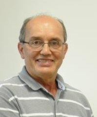
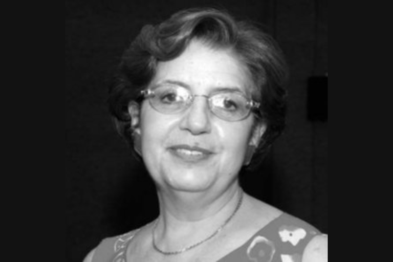

🏆 ISSSD 2025 Awards Announcement
The International Symposium on Solid State Dosimetry (ISSSD) is proud to honor outstanding contributions in the field of radiation science and its applications in medicine, industry, and research. The 2025 Awards recognize excellence, innovation, and leadership that have advanced knowledge, safety, and education in nuclear science.
Prof. Dr. Tarcisio Passos Ribeiro de Campos

We are honored to recognize the exceptional contributions of Prof. Tarcísio Passos Ribeiro de Campos, a distinguished figure in nuclear engineering and radiation science in Brazil. With a career spanning over four decades, Prof. Campos has significantly advanced the fields of medical dosimetry, radiation protection, and nuclear technology.
As a retired full professor at the Federal University of Minas Gerais (UFMG), he continues to collaborate with the university and the Nuclear Technology Development Center (CDTN). Prof. Campos earned his undergraduate degree in Engineering from UFMG (1983), a master’s in Nuclear Engineering from the Federal University of Rio de Janeiro (1985) with a focus on Reactor Physics and Nuclear Resonances, and a Ph.D. in Nuclear Engineering from the University of Illinois at Urbana-Champaign (UIUC, USA, 1993). At UIUC, he conducted research at the Beckman Institute in neuroscience, robotics, and visuo-motor coordination. He completed a postdoctoral fellowship at the Massachusetts Institute of Technology (MIT, USA, 1998) under the MIT-Harvard research program as a Fulbright Fellow, focusing on Boron Neutron Capture Therapy (BNCT) for brain tumors.
Prof. Campos has extensive experience across multiple areas of Engineering and Nuclear Energy, with current emphasis on materials, radiation science, radioisotopes, radiochemistry, and radiobiology. His research spans radioactive biomaterials, ionizing radiation effects, radiotherapy, brachytherapy, experimental and computational dosimetry, radiopharmaceutical production, development of physical radiology simulators, radiotherapy software, neutron capture therapy, radiobiology, radiochemistry, oncology, nuclear instrumentation, automation, and the design of particle accelerators, isotope transmuters, radioisotope generators, and nuclear reactor cores.
He holds 14 patents and 1 software registered with INPI, with 2 additional invention patents submitted to WIPO, and has developed 4 computational systems. Prof. Campos has published 148 articles in indexed journals, 340 full conference papers, and 34 abstracts, and has supervised 57 master’s theses, 21 doctoral dissertations, 2 co-supervisions, and currently has 2 ongoing doctoral supervisions. He has also mentored 13 postdoctoral researchers, including 1 senior postdoc.
Prof. Campos has collaborated with numerous institutions, including departments of Surgery, Biology, Pharmacy, Veterinary, and Medicine at UFMG, as well as radiotherapy centers at Santa Casa de Misericórdia, Hospital Mário Pena, Hospital São Francisco, and CDTN. He has coordinated over 28 research projects funded by government agencies.
He is a member of the editorial boards of the Journal of Radiology (Austin Publishing Group) and the Revista Mineira de Radioterapia. Over 30 years of teaching, he has delivered undergraduate and graduate courses in applied radiobiology, applied radiochemistry, medical imaging concepts, biomedical radiation applications, particle accelerators applied to biomedicine, and radiation protection, within the Radiation Sciences research line focused on engineering and health applications.
Prof. Campos’s dedication to education, research, and innovation has left a lasting legacy, inspiring generations of scientists and advancing nuclear science and technology both in Brazil and internationally.
Prof. Dr. Teógenes Augusto Da Silva

We are honored to recognize the outstanding contributions of Prof. Teógenes Augusto da Silva, a distinguished researcher and educator in nuclear physics and medical physics in Brazil. With a career spanning over four decades, Prof. Silva has made significant advances in radiation metrology, radiological protection, and dosimetry.
He graduated in Physics from the Federal University of Rio de Janeiro (1976) and earned his Master’s (1981) and Ph.D. in Nuclear Engineering from the Programa de Engenharia Nuclear – COPPE/UF (1996). During his doctoral studies, he was a CNPq sandwich fellow at the National Institute of Standards and Technology (NIST, Gaithersburg, USA) from December 1992 to June 1995.
Prof. Silva served as a senior researcher at the Comissão Nacional de Energia Nuclear (CNEN) from July 1977 until his retirement in September 2023. He was a faculty member in the graduate program at the Nuclear Technology Development Center (CDTN, Belo Horizonte) from March 2015 to September 2023 and served as an adjunct professor at the Postgraduate Program in Nuclear Science and Techniques, DEN/UFMG from March 2000 to June 2017.
His research has focused on Medical Physics, emphasizing radiation metrology, radiological protection, and dosimetry, particularly in the calibration of dosimeters, medical and dental radiodiagnostics, quality control, and radiation safety. He contributed as a Mineiro Researcher (2011–2019) and as a CNPq Productivity Fellowship (PQ 2) awardee (2009–2022). He also served as Vice-Coordinator of the CNPq INCT Radiation Metrology in Medicine project (2008–2017).
Prof. Silva held leadership positions at CDTN, including Chief of the Nuclear and Radiological Safety Division (1988–2010) and Chief of the Reactor and Radiation Division (2014–2018). After his retirement, he continues as a collaborator at CDTN (from October 2024) and currently serves as Executive Secretary and Administrative Director of the INCT for Nuclear Instrumentation and Applications in Industry and Health (INAIS, 2023–present). Through his extensive career, Prof. Silva has left a profound impact on radiation safety, dosimetry, and medical physics in Brazil, mentoring generations of scientists and promoting excellence in research and education.
Profª Dra. Helen Jamil Khoury - in memoriam

Prof. Helen Khoury was a leading figure in radiological protection and scientific outreach in Brazil, dedicating over four decades to teaching, research, and development in the nuclear sector. She served as a full professor at the Department of Nuclear Energy (DEN) at the Federal University of Pernambuco (UFPE) and held a Ph.D. in Nuclear Physics from the Pontifical Catholic University of São Paulo.
Her work focused on nuclear dosimetry and instrumentation, with applications in medical imaging, radiation therapy, and radiation metrology. She led the Occupational Radiological Protection Network for Latin America and the Caribbean (Reprolam), fostering professional training and knowledge exchange, and founded the Nuclear Science Museum at DEN/UFPE, a pioneering initiative for popularizing nuclear science in Brazil.
Prof. Khoury’s legacy lives on in the countless professionals she trained, the initiatives she helped establish, and the lives she inspired. Her dedication and vision continue to guide the field of radiological protection and nuclear science.